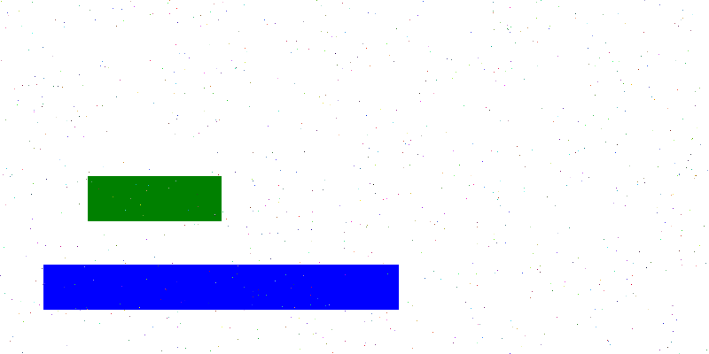
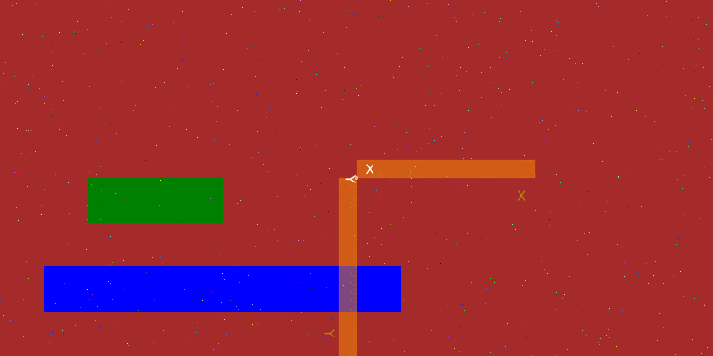
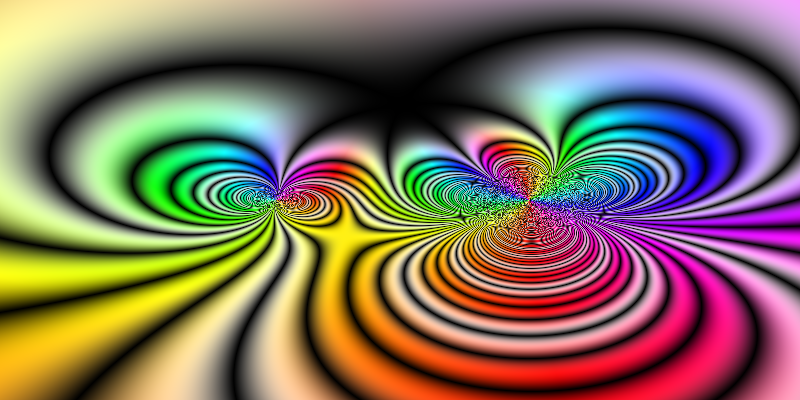
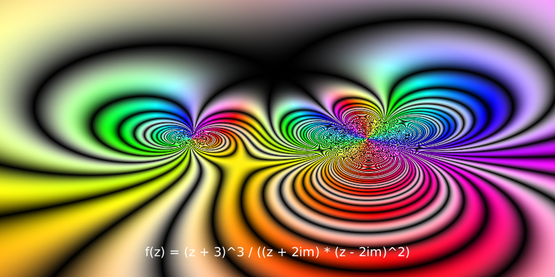
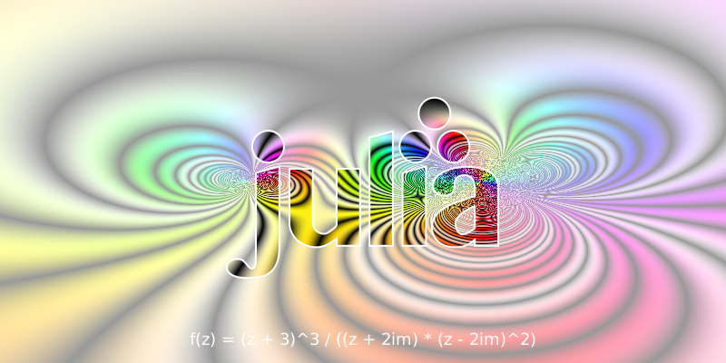

Playing with pixels
As well as working with PNG, SVG, and PDF drawings, Luxor lets you play directly with pixels, and combine these freely with vector graphics and text.
This section is a quick walkthrough of some functions you can use to control pixels. You'll probably need the Images.jl package as well as Luxor.jl.
When you create a new Luxor drawing with Drawing(), you can choose to use the contents of an existing Julia array as the drawing surface, rather than ask for a new PNG or SVG.
using Luxor, Colors
A = zeros(ARGB32, 400, 800)
Drawing(A)
nothing # hideThe array A should be a matrix where each element is an *ARGB32& value. ARGB32 is a way of fitting four small integers (using 8 bits for alpha, 8 bits for Red, 8 for Green, and 8 for Blue) into a 32-bit number between 0 and 4,294,967,296 - each element is a 32 bit unsigned integer that represents a colored pixel. The ARGB32 type is provided by the Images.jl package (or ColorTypes.jl).
You can set and get the values of pixels by treating the drawing's array like a standard Julia array. So we can inspect pixels like this:
using Luxor, Colors # hideA[10, 200] # row 10, column 200ARGB32(0.0N0f8,0.0N0f8,0.0N0f8,0.0N0f8)and set them like this:
using Luxor, Colors # hideA[10, 200] = colorant"red"or even like this:
using Luxor, Colors # hideA[:] = colorant"purple"A[200:250, 100:250] .= colorant"green";A[300:350, 50:450] .= colorant"blue";[A[rand(1:(400 * 800))] = RGB(rand(), rand(), rand()) for i in 1:800]Because this is an array rather than a PNG/SVG, we must either use Images.jl to display it in a notebook or code editor such as VS-Code.
A
Or, to display it in Luxor, start a new drawing, and use placeimage() to position the array on the drawing:
using Luxor, Colors # hideA = zeros(ARGB32, 400, 800)Drawing(A)A[200:250, 100:250] .= colorant"green"A[300:350, 50:450] .= colorant"blue"[A[rand(1:(400 * 800))] = RGB(rand(), rand(), rand()) for i in 1:800]finish()Drawing(800, 400, :png)background("brown")origin()placeimage(A, Point(-400, -200))rulers()finish()preview()
Here's some code that sets the HSV color of each pixel to the value of some arbitrary maths function operating on complex numbers:
using Luxor, Colors, ImagesA = zeros(ARGB32, 400, 800)Drawing(A)f(z) = (z + 3)^3 / ((z + 2im) * (z - 2im)^2)function pixelcolor(r, c; rows = 100, cols = 100) z = rescale(r, 1, rows, -2π, 2π) + rescale(c, 2π, cols, -2π, 2π) * im n = f(z) h = 360rescale(angle(n), 0, 2π) s = abs(sin(π / 2 * real(f(z)))) v = abs(sin(2π * real(f(z)))) return HSV(h, s, v)endfor r in 1:size(A, 1), c in 1:size(A, 2) A[r, c] = pixelcolor(r, c, rows = 400, cols = 800)endfinish()A
Rows and columns, height and width
A note about the two coordinate systems at work here.
Locations in arrays and images are typically specified with row and column values, or perhaps just a single index value. Because arrays are column-major in Julia, the address A[10, 200] is "row 10, column 200 of A", with a single index A[79610].
Locations on plots and Luxor drawings are typically specified as Cartesian x and y coordinates. So Point(10, 200) would identify a point 10 units along the x-axis and 200 along the y-axis from the origin, In Luxor, like most computer graphics systems, the y-axis points vertically down the drawing.
The origin point of an array or image is the first pixel - usually drawn at the top left. In Luxor, the origin point (0/0) of a drawing (if created by Drawing()) is also at the top left, until you move it, or use the origin() function. (The @draw macros also set the origin at the centre of the drawing, for your convenience.)
When you're working on a pixel array drawing, you might find it useful to define a transformation matrix that converts vector graphics coordinates from the conventional x/across/width - y/down/height to the pixel array's row/down/height, column/across/width convention, as used for array access.
In this next example, the transform() function defines a matrix that flips the x and y coordinates, and shifts the origin to the "center" of the array.
Now you can specify the location of text and graphics using more typical vector-graphics coordinates - the text is placed at Point(0, h/2 - 30), ie centered, 30 units above the bottom edge.
using Luxor, ColorsA = zeros(ARGB32, 400, 800)Drawing(A)f(z) = (z + 3)^3 / ((z + 2im) * (z - 2im)^2)function pixelcolor(r, c; rows=100, cols=100) z = rescale(r, 1, rows, -2π, 2π) + rescale(c, 2π, cols, -2π, 2π) * im n = f(z) h = 360rescale(angle(n), 0, 2π) s = abs(sin(π / 2 * real(f(z)))) # * (sin(π * imag(f(z))))) v = abs(sin(2π * real(f(z)))) return HSV(h, s, v)endfor r in 1:size(A, 1), c in 1:size(A, 2) A[r, c] = pixelcolor(r, c, rows=400, cols=800)endw, h = 800, 400transform([0 1 1 0 h/2 w/2])fontsize(18)sethue("white")text("f(z) = (z + 3)^3 / ((z + 2im) * (z - 2im)^2)", Point(0, h/2 - 30), halign=:center)A
A disadvantage is that BoundingBox() functions don't work, because they're not yet aware of transformation matrices.
Array as image
An alternative way of using pixel arrays is to add them to a PNG or SVG drawing using placeimage.
For example, create a new drawing, and this time place the array A on the drawing. You can use it like any other image, such as clipping it by the Julia logo:
# with A defined as abovew, h = 800, 400Drawing(800, 400, :png)origin()placeimage(A, O - (w / 2, h / 2), alpha=0.3)julialogo(centered=true, action=:clip)placeimage(A, O - (w / 2, h / 2))clipreset()julialogo(centered=true, action=:path)sethue("white")strokepath()finish()preview()